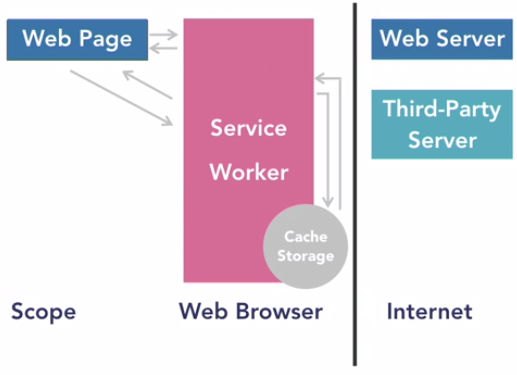
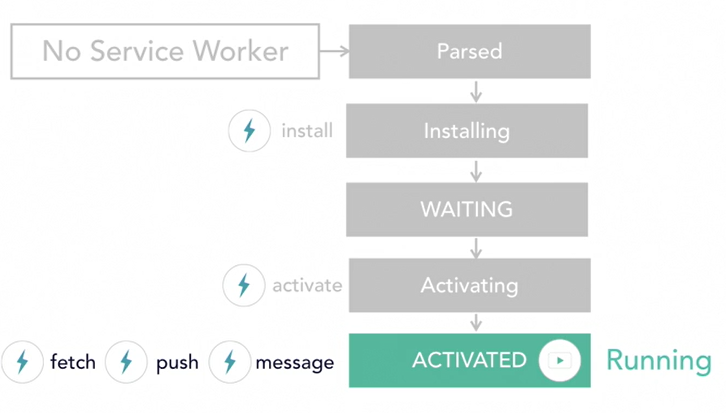
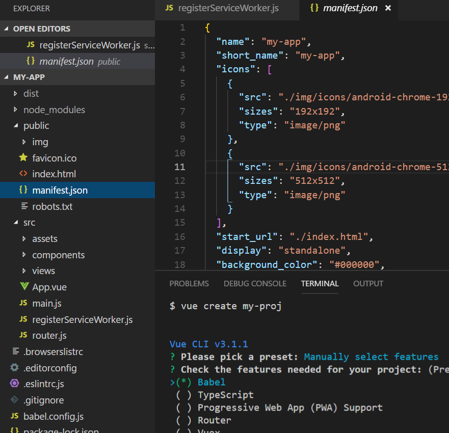

To Do Today:
-
geolocation + google maps
How do get your latitude and longitude from your browser and using that info on google maps
-
service workers
Learn about service workers
-
Build a PWA using VueCLI
Let's build a simple progressive web app using VueCLI
-
Work period for Assignment 2 or Presentation
geolocation API
navigator.geolocation.getCurrentPosition(function(position) {
console.log(position.coords.latitude, position.coords.longitude);
});
Instead of getCurrentPosition, use watchPosition; make it display coordinates, then host it and try on your phone
Google maps API Overview
In-class Exercise 12: Combine geolocation with google maps so that maps focuses on where you currently are.
https://goomap-jkbltftcjn.now.sh/phone
function initMap() {
// check my c:/users/me/node/goomap/ for code
navigator.geolocation.watchPosition(function(position) {
here = {
lat: position.coords.latitude,
lng: position.coords.longitude
};
console.log(here);
var map = new google.maps.Map(document.getElementById("map"), {
zoom: 20,
center: here
});
var marker = new google.maps.Marker({ position: here, map: map });
});
}
Progressive Web Apps - PWAs
- Served over https
- Contains a web app manifest file
- Runs a service worker in the background
For other criteria: Goto https://code.nasa.gov then use Google's DevTools>Audit tab to test if it passes its PWA test
Modern Use Cases:
- Offline
- Slow connection (want faster experience)
- Unreliable connection
Old solutions:
- Google gears
- Application cache
- Apache Cordova / Phonegap
New solution:
Service worker
- Built upon web workers
- Manages a scope (a domain folder)
- Works detached from any browser's tab or PWA process
Service worker acts like a proxy
It can see all the requests made by the web page or PWA
Offline Web
- Goto chrome://serviceworker-internals
or about:debugging#workers on Firefox On another tab, goto https://code.nasa.gov/
- Close tab, then Turn off wifi
- Verify internet not working, then reopen code.nasa.gov
- Try making up a path like code.nasa.gov/anything
- Close tab again, and wait for Running Status to change from RUNNING to STOPPED
Service worker lifecycle
What is a Web Worker?
- It's a JS file running in its own thread
- Service workers also have their own process
- Can import other files
- has no access to a user interface
- no DOM, no innerHTML, no window object
Service workers also manage a scope (a domain folder)
- Scope = Protocol + Host + Port
- For example: https://mydomain.com is 1 scope
- https://mydomain.com/myapp is a different scope
- https://mydomain.com:8050 is a different scope
- https://subdomain.mydomain.com is a different scope
Abilities
- Service workers can see all the network requests that pages in the scope are requesting
- Then it can respond to those requests, by taking responses from a cache (even if offline) or fetching them or creating responses on the fly (like a web server)
- It can also receive messages from the server when web app is closed (via push notification messages)
- There is no permission required to register service workers
1) Create index.html
<h1>Service Worker Test</h1>
<p></p>
<script>
if ("serviceWorker" in navigator) {
navigator.serviceWorker
.register("serviceworker.js")
.then(registration => {
document.querySelector("p").textContent =
"Service Worker registered properly";
})
.catch(error => {
document.querySelector("p").textContent =
"Service Worker NOT registered";
});
} else {
document.querySelector("p").textContent =
"Service Worker NOT available";
}
</script>
2) Create serviceworker.js (in same folder as index.html)
console.log('We are a service worker');
// listen to events via self
self.addEventListener('install', (event) => {
console.log('Install event just happened');
});
self.addEventListener('activate', (event) => {
console.log('Activate event just happened');
});
3) Launch index.html in a local server
- View console to view messages
- View Application tab in devtools (fyi: can drag folder); click Service Workers
- Notice we can stop, start, update, unregister, etc. our service worker
- Open new tabs to same address; notice Clients increments
- In console type: alert('hi'); type: this; then change from top to serviceworker; try again
- Checkbox "Update on reload" then refresh; notice status id# increments
Listening for fetch events
try {
importScripts("events.js");
} catch (e) {
console.log(e);
}
self.addEventListener("fetch", event => {
console.log(`Trying to GET somewhere? ${event.request.url}`);
});
Responding with text
self.addEventListener("fetch", event => {
const response = new Response(
`Trying to GET somewhere? ${event.request.url}`
);
event.respondWith(response);
});
Responding with HTML
self.addEventListener("fetch", event => {
const body = `
<!DOCTYPE html>
<html lang="en">
...
<body>
<h1>Hello world</h1>
</body>
</html>
`;
const response = new Response(body, {
status: 200,
statusText: "OK",
headers: {
"Content-type": "text/html"
}
});
event.respondWith(response);
});

References
- https://www.youtube.com/watch?v=KeFdy1kVH4A - Net Ninja
- https://vuejs.org
- https://www.youtube.com/watch?v=95SOyRUH7P8 CSS-Tricks Screencast #159
- http://www.ntu.edu.sg/home/ehchua/programming/webprogramming/http_basics.html
- Vanilla JavaScript: service workers - https://www.lynda.com/JavaScript-tutorials/Abilities/724809/804528-4.html?autoplay=true
- https://mxb.at/blog/how-to-turn-your-website-into-a-pwa/?utm_content=buffer6cfda&utm_medium=social&utm_source=twitter.com&utm_campaign=buffer
- https://medium.com/plint-sites/build-a-progressive-web-app-using-vue-cli-3-ba040f202d34